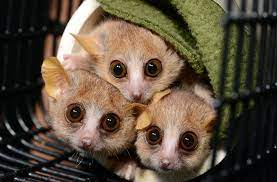

MOUSE LEMMUR
-
Mouse lemurs live in a society where the females are more dominant than males.
-
Mouse lemurs have a combined head, body and tail length of less than 27 centimetres (11 in), making them the smallest primates (the smallest species being Madame Berthe's mouse lemur); however, their weight fluctuates in response to daylight duration.
Lemurs and mouse lemurs were announced by the IUCN as the most endangered of all vertebrates. There were two known mouse lemur species in 1992; by 2016, there were 24. It was estimated that the 24 mouse lemur species evolved from a common ancestor 10 million years ago.
Evolution of mouse lemurs is an example for adaptive radiation -
Mouse Lemurs are omnivorous therefore their diets are diverse and include insect secretions, arthropods, small vertebrates, gum, fruit, flowers, nectar, and also leaves and buds depending on the season.
-

Females may reproduce from 2 to 4 times per year and the gestation period lasts between 2 and 3 months. The young are born blind, helpless, and require parental care. Like other mouse lemurs, they reach reproductive maturity at about one year of age.